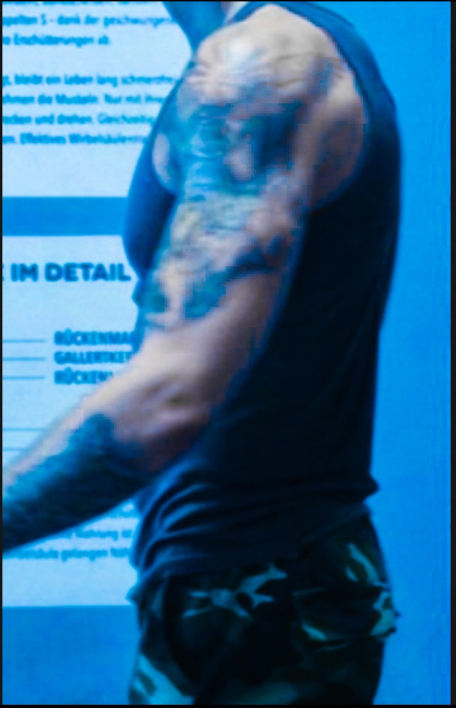

Echte Ergebnisse
Vorher & Nachher
Kein Photoshop, keine Inszenierung – nur echte Bilder aus einem echten Prozess. Der Plan funktioniert. Das hier ist der Beweis.
Was diese Bilder zeigen
Jedes Bild hier ist das Ergebnis konsequenter Ernährungsumstellung, regelmäßiger
Bewegung und Geduld. Es gibt keine Abkürzung – aber es gibt einen klaren Weg.
Und du kannst ihn gehen.
Frontansicht
Vorher
Nachher
Seitenansicht
Links – Vorher

Rechts – Vorher
Nachher
Motivation
Der Anfang
Das Ergebnis